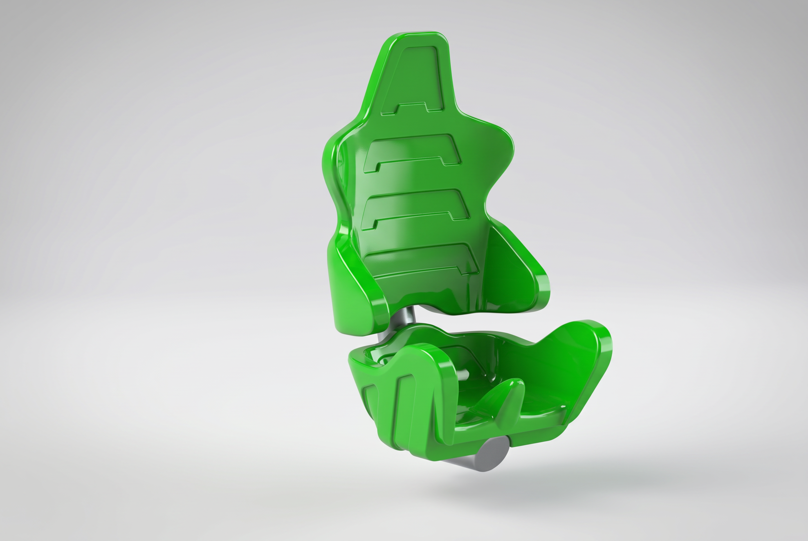

2021—2022 · 3D Next Level
Fair-ride
seat.
A real-scale seat concept for a fair attraction, developed through creative engineering and design exploration.
From sculpted form
to buildable seat.
This fair-ride seat began as a dimensionless sculpted concept. My task at 3D Next Level was to translate that form into a controlled SolidWorks model: a real-size surface model that could be adjusted, checked and prepared for engineering.
I rebuilt the form from reference sketches and managed surfaces rather than treating it as a single visual shell. That made the attachment zones, transitions and proportions easier to refine while keeping the model stable when dimensions changed.
Surface modelling,
with production in mind.
The project was a practical SolidWorks challenge. Clean reference sketches, surface lofts and carefully controlled fills were essential to turn a free-form seat into usable geometry. The work also taught me to avoid unnecessary guide curves and intermediate fillets, because they can make a surface model unstable or introduce visible ripples.
Manufacturing constraints shaped the model from the start. The seat is intended as a polyester shell built from two moulded halves around an internal frame, then bonded together. The mating edge therefore needed a continuous joining flange, while the outer surfaces had to release cleanly from the mould without negative draft or undercuts.
Made to release
and to drain.
I used draft analysis to check the mould-release direction throughout the seat. In polyester lay-up, perfectly vertical side faces can be acceptable where they are not trapped, but negative draft would prevent a shell from being removed. The split line, side-wall transitions and joining edge were refined with that in mind.
Outdoor use introduced a second requirement: water must not remain in the seat. I tested a five-degree drainage gutter and overflow options, then refined the geometry so rainwater can escape without adding an overly visible channel. The final direction balances drainage, a clean appearance and a form that can realistically be made as a polyester shell.
What the model
made possible.
- A free-form concept could be reviewed at full scale with controlled dimensions and restraint-attachment zones.
- Surface quality, release direction and the two-shell construction were considered together rather than after styling.
- The resulting model provided a clearer basis for mould preparation, frame integration and future engineering work.